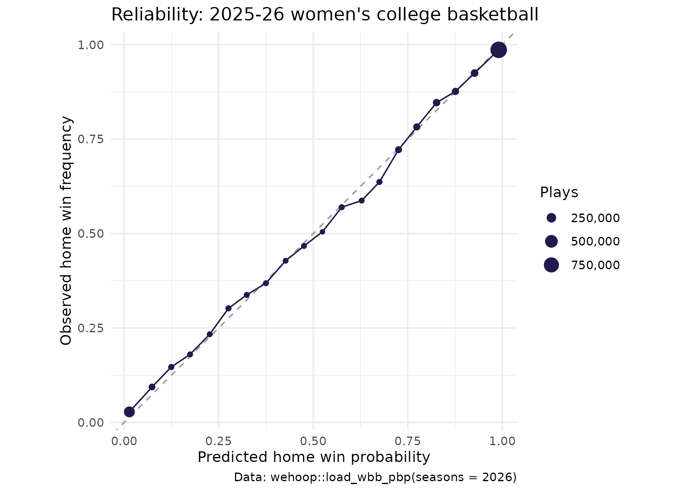
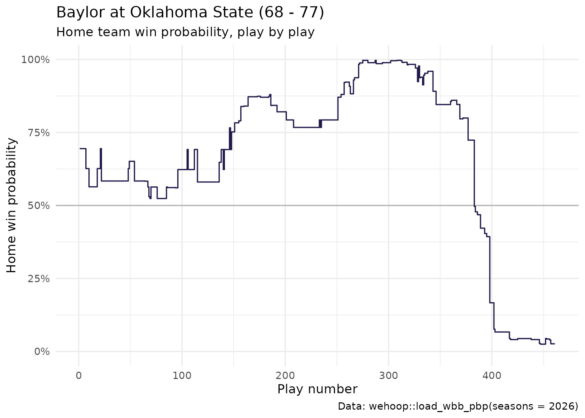

Women's College Basketball Win Probability Model
Saiem Gilani
Source:vignettes/articles/womens-college-basketball-win-probability-model.Rmd
womens-college-basketball-win-probability-model.RmdWin probability (WP) is the chance the home team goes on to
win, given the score, the time left, who has the ball and how good the
two teams are. Every play in wehoop’s women’s college
basketball play-by-play carries it. load_wbb_pbp()
returns two model columns on each play: home_win_prob, the
in-game probability, and pregame_home_prob, the probability
before tip-off that the in-game model starts from. There is no separate
WP file to fall out of sync with the plays.
This article explains what the model estimates, how it is built, and how well its probabilities match what actually happened over a full season. It condenses the official model card in the wehoop-wbb-data repository; numbers quoted from that card are labelled as such, and the main calibration results are recomputed below from the published data.
What the model estimates
| Column | Meaning |
|---|---|
home_win_prob |
Probability the home team wins, after this play |
pregame_home_prob |
Probability the home team wins, before the game, from an as-of team rating model |
The away team’s probability is 1 - home_win_prob.
The pregame prior is a team-rating model fitted on the season’s own
results up to that point. It is not a betting line. The
play-by-play also carries game_spread,
home_favorite, game_spread_available and
home_team_spread; in the current releases those columns
hold a placeholder rather than a real market line, the WP model does not
use them, and you should drop them.
The play-by-play also has espn_home_wp, ESPN’s own win
probability where ESPN publishes one. It is a separate model from
home_win_prob.
How the model works
As reported in the model card, the in-game model is an XGBoost classifier over game state:
- the score margin;
- seconds left in the game, and its square root (the margin matters more as time runs out);
- the pregame prior, on the logit scale;
- which team has possession.
It is fitted on one recent season and applied to every published season. Women’s college basketball was played in halves before the 2015-16 season and in quarters since. The game-state features do not depend on the period structure, and the card measures how well the model transfers to the halves era rather than assuming it (see below).
Loading the play-by-play
pbp <- load_wbb_pbp(seasons = 2026) |>
select(game_id, game_play_number, period_number, clock_display_value,
home_team_name, away_team_name, home_score, away_score,
home_win_prob, pregame_home_prob, text)
nrow(pbp)
#> [1] 2824090
length(unique(pbp$game_id))
#> [1] 6011Each game’s outcome is its final score. Games that end tied in the data (a data artifact, since basketball games cannot end tied) are excluded.
outcomes <- pbp |>
group_by(game_id) |>
summarise(final_home = max(home_score, na.rm = TRUE),
final_away = max(away_score, na.rm = TRUE), .groups = "drop") |>
filter(final_home != final_away) |>
mutate(home_win = as.integer(final_home > final_away))
plays <- pbp |>
inner_join(outcomes, by = "game_id") |>
filter(!is.na(home_win_prob))
c(plays = nrow(plays), games = nrow(outcomes),
home_win_rate = round(mean(outcomes$home_win), 3),
mean_home_win_prob = round(mean(plays$home_win_prob), 3))
#> plays games home_win_rate mean_home_win_prob
#> 2824090.000 6011.000 0.625 0.626The mean predicted probability sitting close to the realized home win rate is the first, coarsest calibration check. Home-court advantage in college basketball is large, and both numbers reflect it.
How well calibrated is it?
Brier score
The Brier score is the mean squared difference between the predicted probability and the outcome (1 for a home win, 0 for a loss). Lower is better. A model that always predicted the season’s home win rate is the baseline to beat.
home_rate <- mean(plays$home_win)
plays |>
summarise(
brier_in_game = mean((home_win_prob - home_win)^2),
brier_baseline = mean((home_rate - home_win)^2),
brier_pregame_prior = mean((pregame_home_prob - home_win)^2, na.rm = TRUE)
) |>
mutate(skill_vs_baseline = 1 - brier_in_game / brier_baseline)
#> # A tibble: 1 × 4
#> brier_in_game brier_baseline brier_pregame_prior skill_vs_baseline
#> <dbl> <dbl> <dbl> <dbl>
#> 1 0.104 0.234 0.164 0.557As reported in the model card for the same season, the in-game Brier score is 0.1045 against a baseline of 0.2341, and the pregame prior alone scores 0.1638. The in-game model beating its own prior is the value the play-by-play state adds.
Reliability diagram
Group plays into 20 bins by predicted probability and compare each bin’s average prediction with how often the home team actually won. A calibrated model’s points fall on the diagonal.
calib <- plays |>
mutate(bin = cut(home_win_prob, breaks = seq(0, 1, by = 0.05), include.lowest = TRUE)) |>
group_by(bin) |>
summarise(plays = n(), predicted = mean(home_win_prob),
observed = mean(home_win), .groups = "drop")
# Mean absolute gap between predicted and observed across the 20 bins
mean(abs(calib$predicted - calib$observed))
#> [1] 0.01343012
ggplot(calib, aes(predicted, observed)) +
geom_abline(linetype = "dashed", color = "grey60") +
geom_line(color = "#221A4D") +
geom_point(aes(size = plays), color = "#221A4D") +
scale_size_area(max_size = 5, labels = scales::comma) +
coord_equal() +
labs(
title = "Reliability: 2025-26 women's college basketball",
x = "Predicted home win probability", y = "Observed home win frequency",
size = "Plays",
caption = "Data: wehoop::load_wbb_pbp(seasons = 2026)"
) +
theme_minimal()
Does it get sharper as the game goes on?
Uncertainty should resolve as time runs out, so the Brier score should fall period by period.
plays |>
filter(period_number <= 4) |>
group_by(period_number) |>
summarise(plays = n(), brier = mean((home_win_prob - home_win)^2), .groups = "drop")
#> # A tibble: 4 × 3
#> period_number plays brier
#> <int> <int> <dbl>
#> 1 1 657110 0.147
#> 2 2 695290 0.121
#> 3 3 711492 0.0943
#> 4 4 740981 0.0554Does it work on an era it never saw?
As reported in the model card, the same model applied to the 2012-13 season, from the halves era and never seen in training, scores a Brier of 0.1136 against a baseline of 0.2313 (51% skill over the baseline, against 55% in the 2025-26 season), with a 20-bin calibration error of 0.0273 against 0.0143 in-era. The model transfers across the change from halves to quarters, with somewhat more calibration error in the older era.
A game, told by its win probability
The column tells the story of a comeback without any narrative input. Here is the 2025-26 game in which the eventual winner’s win probability fell lowest. To avoid showcasing a data glitch, keep only games whose play-by-play runs to the end: the probability on the last play must already agree with the result.
comeback <- plays |>
arrange(game_id, game_play_number) |>
group_by(game_id) |>
summarise(
winner_low = if_else(first(home_win) == 1, min(home_win_prob), min(1 - home_win_prob)),
last_play_gap = abs(last(home_win_prob) - first(home_win)),
home = first(home_team_name), away = first(away_team_name),
final = paste(first(final_home), "-", first(final_away)),
.groups = "drop"
) |>
filter(last_play_gap < 0.05) |>
arrange(winner_low) |>
slice(1)
comeback
#> # A tibble: 1 × 6
#> game_id winner_low last_play_gap home away final
#> <int> <dbl> <dbl> <chr> <chr> <chr>
#> 1 401827301 0.00307 0.0262 Oklahoma State Baylor 68 - 77
plays |>
filter(game_id == comeback$game_id) |>
arrange(game_play_number) |>
ggplot(aes(game_play_number, home_win_prob)) +
geom_hline(yintercept = 0.5, color = "grey70") +
geom_step(color = "#221A4D") +
scale_y_continuous(labels = scales::percent, limits = c(0, 1)) +
labs(
title = paste0(comeback$away, " at ", comeback$home, " (", comeback$final, ")"),
subtitle = "Home team win probability, play by play",
x = "Play number", y = "Home win probability",
caption = "Data: wehoop::load_wbb_pbp(seasons = 2026)"
) +
theme_minimal()
Which seasons have the columns?
As reported in the model card, a whole-history republish in 2026 left the WP columns only on the 2024 through 2026 releases; earlier seasons need a one-off republish, after which every season from 2003 on is meant to carry them. The publish step now refuses to upload a play-by-play file without them. Check before you rely on an older season:
old <- load_wbb_pbp(seasons = 2016)
c("home_win_prob", "pregame_home_prob") %in% names(old)Limitations
- Missing game state. Foul counts, the bonus and timeouts remaining are not model inputs, so late-game probabilities in close games ignore them.
- One training season. The model is fitted on one recent season. The unseen-era test above bounds the error from applying it elsewhere, but does not remove it.
- The prior moves too. The pregame prior is rebuilt from each season’s own results, so in the first weeks of a season it rests on few games.
- Placeholder spread columns. The spread columns in the play-by-play are not real market lines; do not use them as a prior or a feature.
Where to go next
- Women’s college team ratings: opponent-adjusted team strength.
- Women’s college RAPM and player value: player-level models.
- WBB Cookbook: more recipes with the play-by-play.
- Getting Started: the glossary of terms.
- The women’s college release loaders in the function reference.